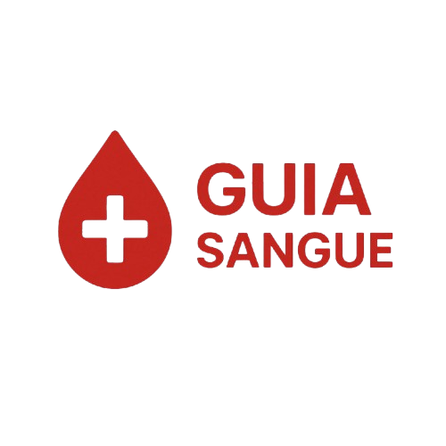

Início
Cadastrar
Hospitais
Check-in de Doação
Check-in de Doação
Apresentar documento oficial com foto
Idade entre 16 e 69 anos
Peso mínimo de 50 kg
Estar bem de saúde
Estar alimentado
Não ter ingerido álcool nas últimas 12h
Se houver feito Tatuagem/piercing em local não regulamentado aguardar 6 meses
Não Estar gestante (aguardar 90 dias após o parto e 180 para cesárea).
Se estiver operado de uma cirurgia pequena (ex.: dental) aguardar 24 horas.
Se estiver operado de uma cirurgia grande (ex.: apêndice) aguardar 6 a 12 meses
Vacina contra COVID-19 ou gripe: aguardar 48 horas após a dose
Vacina contra hepatite B ou rubéola: aguardar 48 horas a 4 semanas (varia por tipo)
Uso de antibióticos: aguardar 7 dias após o término.
Comportamento sexual de risco (ex.: parceiros múltiplos sem proteção): aguardar 12 meses.
Viagem para áreas de risco de malária (ex.: Amazônia): aguardar 12 meses após retorno
Enviar Check-in
×
🩸
Voltar para o inicio